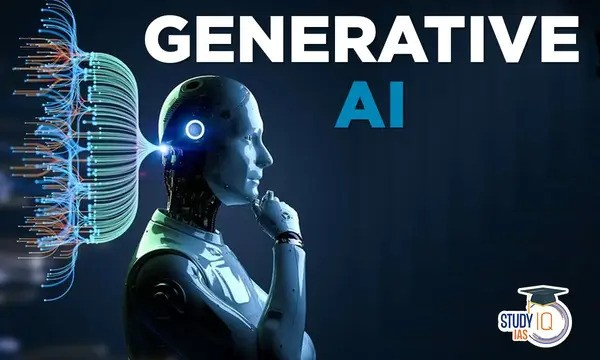

Do you know about chatbot??
A chatbot is a computer program that simulates human conversation with an end user. Though not all chatbots are equipped with artificial intelligence (AI), modern chatbots increasingly use conversational AI techniques like natural language processing (NLP) to understand the user’s questions and automate responses to them.
